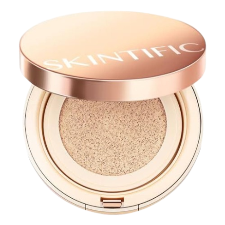
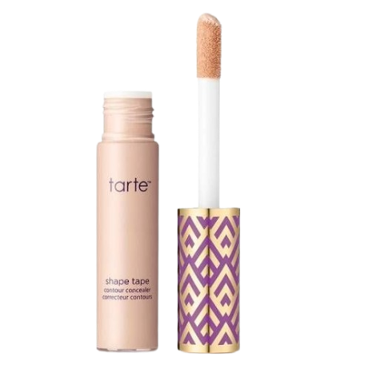
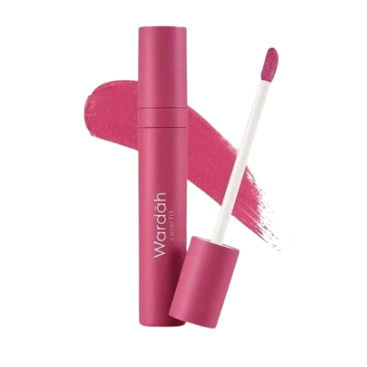
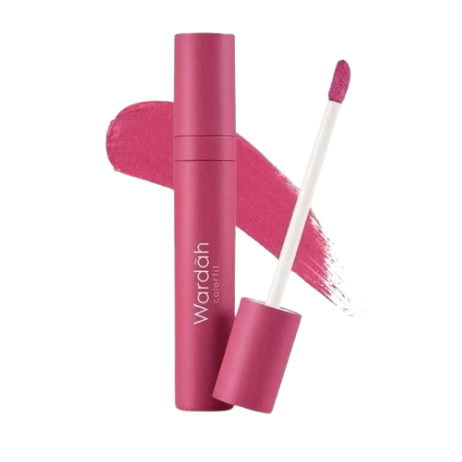
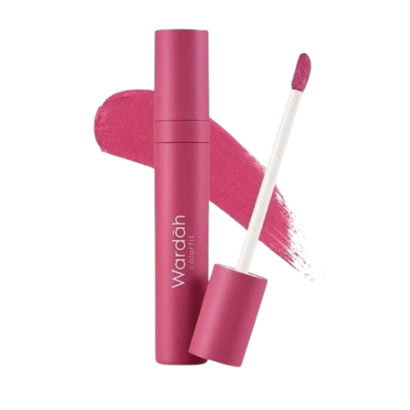

RAYA MAKE UP STYLE
For my Raya 2025 makeup look, I was inspired by the
beautiful purple tones of my baju Raya this year.
I wanted everything to match harmoniously, so I went for
a soft yet elegant purple themed look
Products



 

